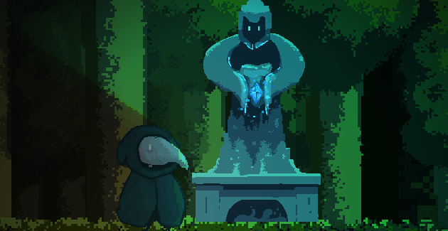
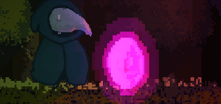
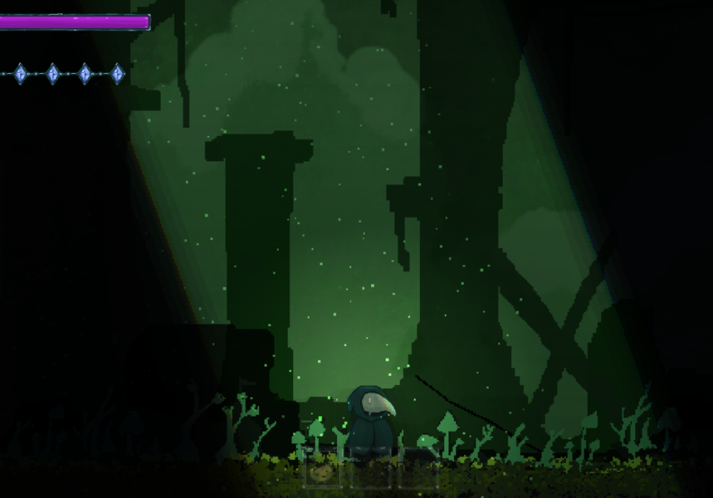
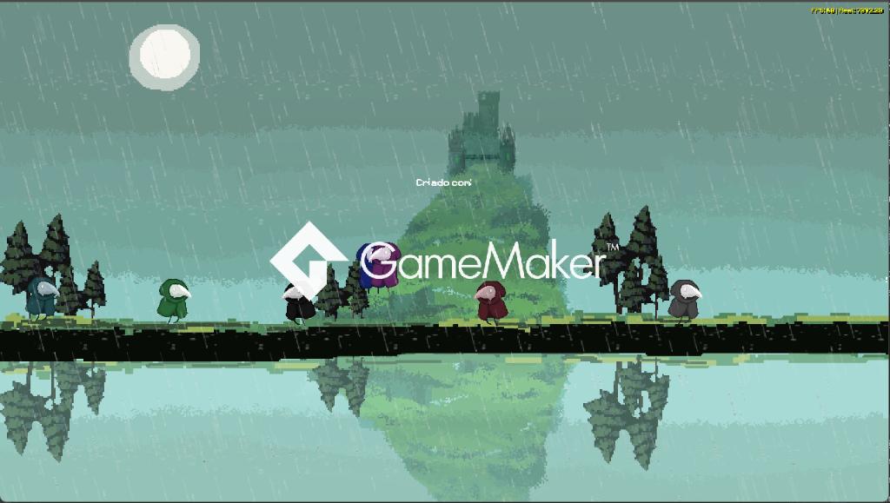

Desenvolvido por Stopp
Capturas de Ecrã do Jogo




Sobre o Jogo
Sons of Echoes é um jogo atmosférico de ação, aventura e exploração em 2D criado e programado por Stopp no motor GameMaker.
Assume o controlo de Orin, uma figura enigmática encapuzada e armada com habilidades místicas. Aventura-te por biomas florestais profundos, cavernas subterrâneas e ruínas esquecidas repletas de servos sombrios e criaturas titânicas.
Mecânicas de Jogabilidade
- Combate com Orin: Domínio de magia, orbes de mana, ataques rápidos e esquiva estratégica em tempo real.
- Inimigos & Boss Battles: Confrontos intensos contra servos invocados e chefes com padrões únicos de ataque e fases de batalha.
- Exploração Dinâmica: Transição fluida entre florestas enevoadas e interiores subterrâneos de grutas com iluminação ambiental.
- Música & Atmosfera: Design sonoro imersivo e banda sonora ambiente desenhada para suspense e aventura.
Ficha Técnica
Criador
Stopp (Gustavo)
Engine
GameMaker Studio
Protagonista
Orin
Estado
Em Desenvolvimento
Modo de Jogo
Singleplayer / Aventura
Estilo Visual
Pixel Art & 2D Atmosférico